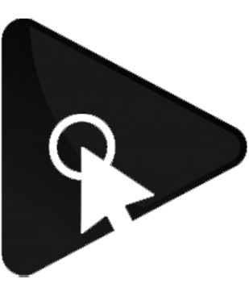

<!-- Toolbar for desktop -->
<mat-toolbar color="primary" *ngIf="!(isHandset$ | async)">
  <button mat-icon-button aria-label="Toggle sidenav" onclick="this.blur()" (click)="drawer.toggle()">
    <mat-icon aria-label="Side nav toggle icon">menu</mat-icon>
  </button>
  <button mat-button routerLink="/" class="navbar-brand">
    
  </button>
  <span class="welcome">WikiMovie</span>
  <span class="fill-remaining-space"></span>
</mat-toolbar>

<mat-sidenav-container color="accent" class="sidenav-container">
  <!-- Sidenav -->
  <mat-sidenav #drawer class="sidenav" [attr.role]="(isHandset$ | async) ? 'dialog' : 'navigation'"
    [mode]="(isHandset$ | async) ? 'over' : 'side'" opened="false">
    <!-- sidenav toolbar -->
    <mat-toolbar color="{{(isHandset$ | async) ? 'primary' : ''}}">Menu</mat-toolbar>

    <!-- Ao selecionar uma opção, fecha a sidenav qnd está em mobile mode -->
    <mat-nav-list (click)="drawer.mode === 'over' && drawer.toggle()">
      <a mat-list-item routerLink='/'>Home</a>
      <a mat-list-item routerLink='register'>Cadastrar filme</a>
    </mat-nav-list>
  </mat-sidenav>
  <mat-sidenav-content>

    <!-- Toolbar for mobile-->
    <mat-toolbar color="primary" *ngIf="isHandset$ | async">
      <button type="button" aria-label="Toggle sidenav" mat-icon-button onclick="this.blur()" (click)="drawer.toggle()">
        <mat-icon aria-label="Side nav toggle icon">menu</mat-icon>
      </button>
      <button mat-button routerLink="/" class="navbar-brand">
        
      </button>
      <span class="fill-remaining-space"></span>
      <span class="welcome">WikiMovie</span>
    </mat-toolbar>

    <!-- Add Content Here -->
    <ng-content></ng-content>

  </mat-sidenav-content>
</mat-sidenav-container>
